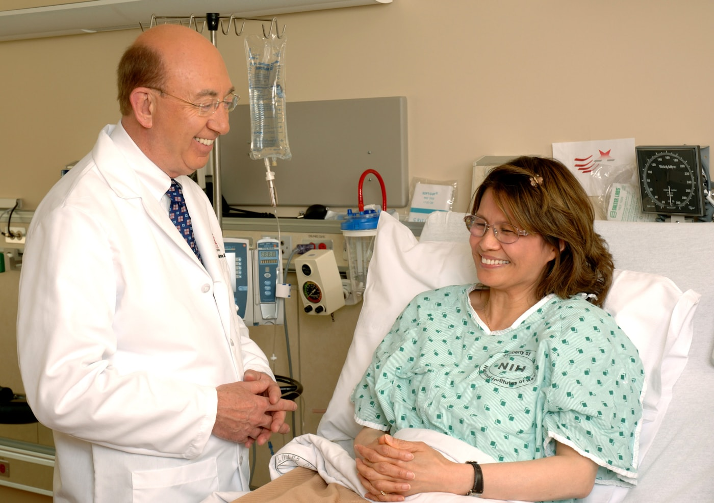

Dr. Elena Rusu
Medic specialist · Profil demo
650 MDL30 min
O echipă care te ascultă. Specialiști, consultații și programări organizate în jurul tău.
Găsește un specialist →
Medic specialist · Profil demo
Medic pediatru · Profil demo
Medic specialist · Profil demo
Medic internist · Profil demo
Descoperă echipa și costul consultației.
Alege un interval în formularul de programare.
Verifică și anulează rezervările demo din contul local.
Instrumente locale pentru clinică multidisciplinară. Datele rămân în acest browser și pot fi resetate oricând.
0/30 instrumente configurateMarchează cât de urgent este parcursul medical, astfel încât pacienți și familii să obțină îngrijire mai clară.
Alege criteriul decisiv pentru parcursul medical, astfel încât pacienți și familii să obțină îngrijire mai clară.
Confirmă pregătirea pentru parcursul medical, astfel încât pacienți și familii să obțină îngrijire mai clară.
Fixează limita acceptată pentru parcursul medical, astfel încât pacienți și familii să obțină îngrijire mai clară.
Păstrează detaliul esențial despre parcursul medical, astfel încât pacienți și familii să obțină îngrijire mai clară.
Evaluează încrederea în parcursul medical, astfel încât pacienți și familii să obțină îngrijire mai clară.
Activează alternativa pentru parcursul medical, astfel încât pacienți și familii să obțină îngrijire mai clară.
Selectează momentul ideal pentru parcursul medical, astfel încât pacienți și familii să obțină îngrijire mai clară.
Transmite prioritatea legată de parcursul medical, astfel încât pacienți și familii să obțină îngrijire mai clară.
Notează ce trebuie verificat la parcursul medical, astfel încât pacienți și familii să obțină îngrijire mai clară.
Calibrează confortul pentru parcursul medical, astfel încât pacienți și familii să obțină îngrijire mai clară.
Activează varianta prudentă pentru parcursul medical, astfel încât pacienți și familii să obțină îngrijire mai clară.
Alege avantajul principal al parcursul medical, astfel încât pacienți și familii să obțină îngrijire mai clară.
Stabilește nivelul dorit pentru parcursul medical, astfel încât pacienți și familii să obțină îngrijire mai clară.
Salvează întrebarea despre parcursul medical, astfel încât pacienți și familii să obțină îngrijire mai clară.
Acordă un scor anticipat pentru parcursul medical, astfel încât pacienți și familii să obțină îngrijire mai clară.
Bifează confirmarea privind parcursul medical, astfel încât pacienți și familii să obțină îngrijire mai clară.
Alege canalul potrivit pentru parcursul medical, astfel încât pacienți și familii să obțină îngrijire mai clară.
Setează flexibilitatea pentru parcursul medical, astfel încât pacienți și familii să obțină îngrijire mai clară.
Explică motivul alegerii pentru parcursul medical, astfel încât pacienți și familii să obțină îngrijire mai clară.
Evaluează calitatea percepută a parcursul medical, astfel încât pacienți și familii să obțină îngrijire mai clară.
Activează avertizarea pentru parcursul medical, astfel încât pacienți și familii să obțină îngrijire mai clară.
Alege abordarea favorită pentru parcursul medical, astfel încât pacienți și familii să obțină îngrijire mai clară.
Acordă timpul necesar pentru parcursul medical, astfel încât pacienți și familii să obțină îngrijire mai clară.
Adaugă un reper personal pentru parcursul medical, astfel încât pacienți și familii să obțină îngrijire mai clară.
Măsoară relevanța parcursul medical, astfel încât pacienți și familii să obțină îngrijire mai clară.
Confirmă următoarea acțiune pentru parcursul medical, astfel încât pacienți și familii să obțină îngrijire mai clară.
Selectează stilul de explorare pentru parcursul medical, astfel încât pacienți și familii să obțină îngrijire mai clară.
Ajustează nivelul urmărit pentru parcursul medical, astfel încât pacienți și familii să obțină îngrijire mai clară.
Păstrează concluzia despre parcursul medical, astfel încât pacienți și familii să obțină îngrijire mai clară.